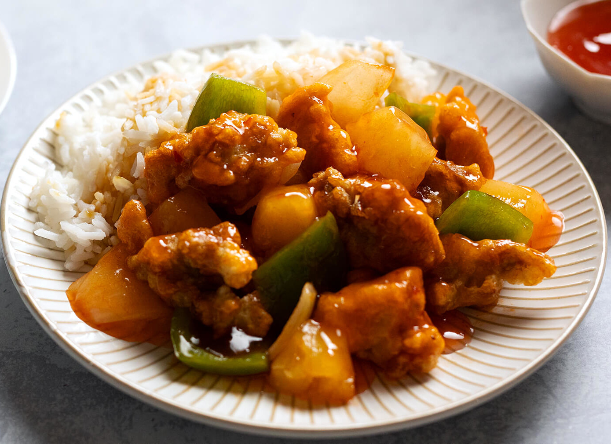

Sweet & Sour Chicken

Restaurant Quality Sweet & Sour Chicken
Delicious concotion of sweet & sour chicken with green
peppers, onions, and pineapple. Tastes just like its from a restaurant!
Ingredients
- 2 large egg whites
- 5 tablespoons cornstarch
- 1 pound boneless skinless chicken thighs, cut into bite-sized pieces
- 1 cup vegetable oil
- 1/2 cup chopped bell pepper
- 1/2 cup chopped onion
- 1/2 cup pineapple chunks
- 3/4 cup Sweet and Sour Sauce
Steps
- Whisk together egg whites and cornstarch in medium bowl. Add chicken and toss to coat.
- Heat oil in 10-inch skillet over medium heat to 375°F. Fry chicken in batches until brown and crisp, 8 to 10 minutes, turning occasionally. Drain on paper towel-lined plate. Set chicken aside.
- Carefully pour all but 1 tablespoon oil out of skillet into heat-proof container; discard extra oil.
- Add peppers and onions to skillet and sauté until tender, about 2 minutes. Stir in pineapple, chicken and sauce and cook until bubbling, about 2 minutes. Serve on rice.
Return Home